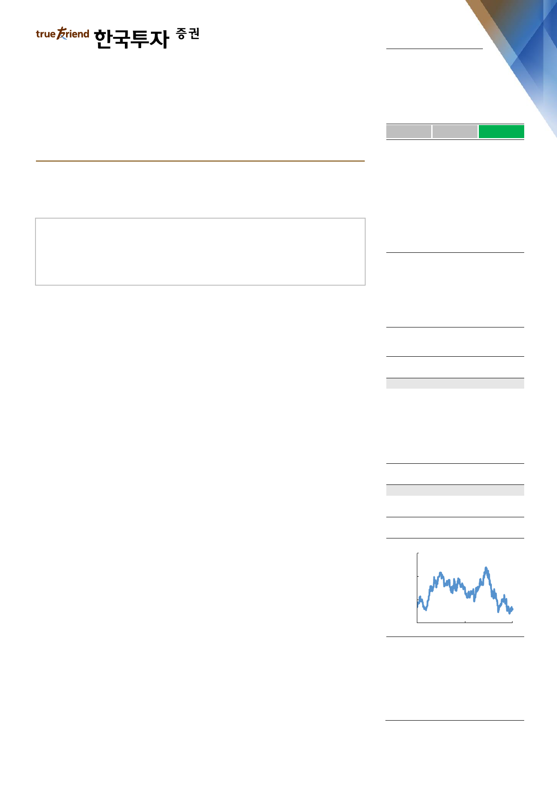

실적 Review
2019. 4. 25
S-Oil(010950)
하 회
부 합
영업이익의 컨센서스 대비를 의미
상 회
다가올 호재에 집중
매수(유지)
유가회복으로 1분기 흑자전환
재고평가 이익 및 석유화학 부문이 추정치 상회
지나가는 악재에 붙잡혀 있기보다 다가올 호재에 집중할 시기
Facts : 유가회복으로 흑자전환
1분기 영업이익은 2,704억원으로 전년동기대비 6% 개선되고 전분기대비 흑자전
환했다. 컨센서스 및 당사 영업이익 추정치도 각각 10%, 8% 상회했다. 1분기에
전체 사업부의 정기보수가 한달가량 진행됐으며 이에 따른 기회비용은 900억원
수준이다. 정기보수에도 불구하고 전분기대비 실적이 개선된 가장 큰 요인은 유가
회복에 따른 재고 관련 이익 2,000억원이다. 한편 환차손 480억원 등 일회성 비
용으로 순이익은 추정치를 하회했다.
Pros & cons : 정유, 윤활기유 추정치 하회했으나 석유화학이 상회
정유부문 영업이익은 957억원으로 흑자전환 했으나, 추정치는 12% 하회했다. 정
기보수에 따른 판매량 감소가 하회요인이다. 신규 고도화설비인 RUC의 경우 5월
정기보수 실시 후 6월부터 100% 가동할 계획이다. 석유화학부문은 추정치를 큰
폭으로 상회했다. 신규 고도화설비인 ODC에 따른 이익기여와 정기보수를 대비해
PX 재고를 사전적으로 확보한 영향이 상회요인이다. 제2 PX 설비의 경우 3월 정
기보수 이후에도 파손된 Internal Chamber 교체작업으로 8월말에 재가동될 계획
이다. 다만 PX설비 이전 단계에서 생산되는 Mixed-Xylene(PX의 원재료)는 정
기보수 기간에도 생산된다. 이를 외부 판매해 기회비용을 축소할 계획이다. 윤활기
유부문은 정기보수에 따른 기회비용이 200억원 발생해 영업이익은 272억원을 기
록하며 전분기대비 43% 감소하고 추정치도 큰 폭으로 하회했다.
Action : 다가올 호재를 기다릴 시기
4분기부터 유가 폭락, 배당 축소 그리고 예상보다 길어지는 설비보수 등 다양한
악재가 실적감소 및 주가하락 요인으로 작용했다. 그러나 악재는 주가에 이미 반
영되었다. 이제는 개선될 하반기와 2020년을 바라보고 매수관점을 강화할 시기다.
휘발유 마진 및 유가는 이미 큰 폭으로 회복했다. 앞으로도 긍정적 요인이 줄줄이
대기하고 있다. 신규 고도화설비(RUC, ODC) 정상가동에 따른 하반기 이익 개선,
4분기 미국 원유 수출 파이프라인 가동에 따른 원가 경쟁력 회복 그리고 2020년
국제해사기구(IMO)의 황 함유량 규제 등 긍정적 요인에 집중할 시기다.
목표주가: 137,000원(유지)
Stock Data
KOSPI(4/23)
2,221
주가(4/23)
94,700
시가총액(십억원)
10,662
발행주식수(백만)
113
52주 최고/최저가(원)
137,500/89,600
일평균거래대금(6개월, 백만원)
33,532
유동주식비율/외국인지분율(%)
36.5/79.1
주요주주(%)
Aramco Overseas
Company BV 외 12 인
63.5
국민연금
6.1
Valuation 지표
PER(x)
PBR(x)
ROE(%)
DY(%)
EV/EBITDA(x)
EPS(원)
BPS(원)
2018A
44.1
1.8
3.9
0.8
17.1
2,216
55,496
2019F
8.7
1.4
18.0
4.8
6.2
10,920
65,538
2020F
4.5
1.2
28.5
9.2
3.5
21,029
82,038
주가상승률
절대주가(%)
KOSPI 대비(%p)
1개월
(1.5)
(3.0)
6개월
(24.2)
(29.7)
12개월
(18.0)
(7.8)
주가추이
(원)
152,000
128,000
104,000
80,000
Apr-17
자료: FnGuide
Apr-18
Apr-19
이도연
daniel.dy.lee@truefriend.com